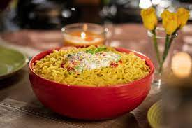

Italian Maggi

Loaded with Italian Flavours, this recipe packs a punch and I am sure you are going to love this
mélange of Maggi Flavour combined with the slightly sweet and tangy Italian touch to it.
Ingredients
- Olive oil 1 tbsp
- Garlic 1 teaspoon (Chopped)
- Onion ¼ cup (Chopped
- Mushroom 2-3 (Cut into pieces)
- Olives 2 tbsp
- Pasta sauce 1 tbsp
- Oregano 1 tsp
- Maggi Masala 1 packet
- Parmesan Cheese 1 teaspoon (Grated)
Steps
- Heat olive oil in a pan.
- Once the oil is hot, add garlic and onion and fry for a few seconds.
- Add mushroom and olives and fry for 2-3 minutes.
- Add pasta sauce and cook for 2 minutes.
- Add oregano and Maggi Noodles along with the taste maker.
- Add 1 cup of water.
- Cook until Maggi is done.
- Garnish with grated Parmesan Cheese.
- Serve hot.